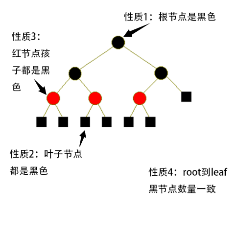

我一直觉得那些著名的数据结构，都是工程设计和数学的完美结合。
所有的数据结构都是被精心设计出来的，此所谓工程设计。但是，既然叫精心设计，就意味着有一套准则，这个准则就是数学。
没有数学基础的数据结构都是耍流氓。
红黑树拥有精巧的结构设计和强大的数学基础，但我总觉得有点过于复杂，故写本文来回顾总结下。
红黑树的定义
红黑树是一种特殊的二叉树，每个节点有颜色bit，要么红色要么黑色。红黑树必然满足以下4个结构上的性质：
根节点是黑色
叶子节点（NULL）视为黑色节点
如果一个节点是红色，那么它的2个孩子节点都是黑色
对于每条从根节点出发、并到达叶子节点的路径，路径上黑色节点的数量一致（叶子节点也计算在内）

这4个性质，稍微想一遍就知道是没有矛盾的。但是没有矛盾只是第一步，接着就是证明这4个性质为什么能使得红黑树变成牛逼的树。
牛逼指的是这棵树很平衡。平衡的定义是：设二叉树的节点数目为n，那么树的高度h和n必须满足：\( h = O(\log _{2}n)\)。这个就是要证明的东西。
红黑树的证明
所谓的证明，其实就是从上面的4个结构性质，分析出各种各样的数学上的性质，然后看下这些数学性质究竟能不能决定红黑树是不是平衡。
若能够证明平衡，就可以抽丝剥茧，找出最关键的几条数学性质，就可以总结出一份简短的证明过程了。
下面就是一份老外给出的最简单的证明过程。
定义BH(x)
首先需要定义一个函数BH(x)：x指红黑树的一个节点，BH(x)指这个x节点到叶子节点的路径上黑色节点的数量。
根据上面的性质4，可以知道无论x走哪条路径到达叶子节点，BH(x)都一样。
2个引理
引理1：对于以节点x为根节点的子树，设子树的总的节点数量n，那么有\( n \geq 2^{BH(x)} - 1 \)
要分2个情况来证明这个引理：
树只有黑色节点。此时根据性质4，可以知道这树是完全二叉树，完全二叉树的节点数量等于\( 2^{h} - 1 \)，而h又等于BH(x) 。所以此种情况满足引理。
树有黑色也有红色节点。可以把这种情况视作第一种情况下的红黑树被添加了一些红色节点或者黑色节点被替换成红色节点，根据性质1-4，可知道红色节点只会导致BH(x)值不变或变小。不等式依然成立。
综上，此引理没有问题。
(简单记忆：1）树只有黑，完全二叉树，n最大；2）树内部节点变红，n不变，BH(x)变小，不等式依然成立；3）树页节点变红，需要增加新的页节点来保持红黑树性质，n变大，BH(x)不变，不等式依然成立）
引理2：设树的高度为h，那么有\( BH(root) \geq \frac {h} {2} \)
这个引理其实是在说，从根节点到叶子节点，黑色节点起码有高度的一半那么多。分2步来想：假如黑点节点数量是高度的一半，根据红黑树性质1-4，可以知道必然是黑红相间的排列方式：黑-红-黑-红 ···· ；当黑点节点数量是高度的一半再减一时，等于有一个黑色节点消失了，就说明出现了2个连在一起的红色节点了。就破坏了性质3。于是反证成功。
另外一种思路：
因为红黑树的性质3“红节点的2个孩子都是黑节点”，所以使得一条路径上红节点总数最大化的方法，必然是“黑(root)-红-黑-红-······-黑-红-黑-红-黑(leaf)”，注意，最后一个必然是叶子节点，根据性质2，这个叶子节点是黑节点，所以根据这个路径排列，就可以知道红节点必然比黑节点少，反而言之，黑节点数量必然大于等于高度的二分之一。
定理：任意一棵红黑树必然满足：\( h \leq 2log_{2}(n+1) \)
证明：
根据引理1，有：
\[ n \geq 2^{BH(root)} - 1 \]
再因为引理2，有：
\[ n \geq 2^{BH(root)} - 1 \geq 2^{\frac {h} {2}} - 1\]
\[ n \geq 2^{\frac {h} {2}} - 1\]
再变换一下：
\[ n + 1 \geq 2^{\frac {h} {2}} \]
\[ log_{2}(n + 1) \geq log_{2}2^{\frac {h} {2}} \]
\[ log_{2}(n + 1) \geq \frac {h} {2} \]
\[ h \leq 2log_{2}(n + 1) \]
得证。
这个定理的重要性在于，它保证了红黑树是平衡的。
总结
红黑树和一般的二叉树相比，在空间上只是多了一个bit，这个特性对红黑树的实际运用非常棒；而围绕“red or black"设计出来的4个性质，恰好使得红黑树获得了最后的不等式，这个不等式使得红黑树和最理想的平衡二叉树也相差无几了。
虽然红黑树能够简单地被理解，但是它的发明过程想必是不简单的，这需要天才般的想象力(红黑树只用一个标记位)和数学分析能力。也可以称为发明创造能力，这是不容易的。吾等只能膜拜大神。
除了红黑树平衡性证明之外，还有别的算法设计工作要做，也就是红黑树的插入、删除、调整运算，必须足够快，不然实际价值就会降低。
当然，上文只能证明红黑树在理论上的优秀。如果在工程上能够实现这套理论，才算是完美的，然而实际上不那么简单（要正确实现红黑树的插入、删除、旋转操作啊）。下一篇文章前我会自己实现一遍红黑树，再写下心得体会。
参考资料
http://www.dgp.toronto.edu/people/JamesStewart/378notes/16redBlack/
博主将十分感谢对本文章的任意金额的打赏^_^